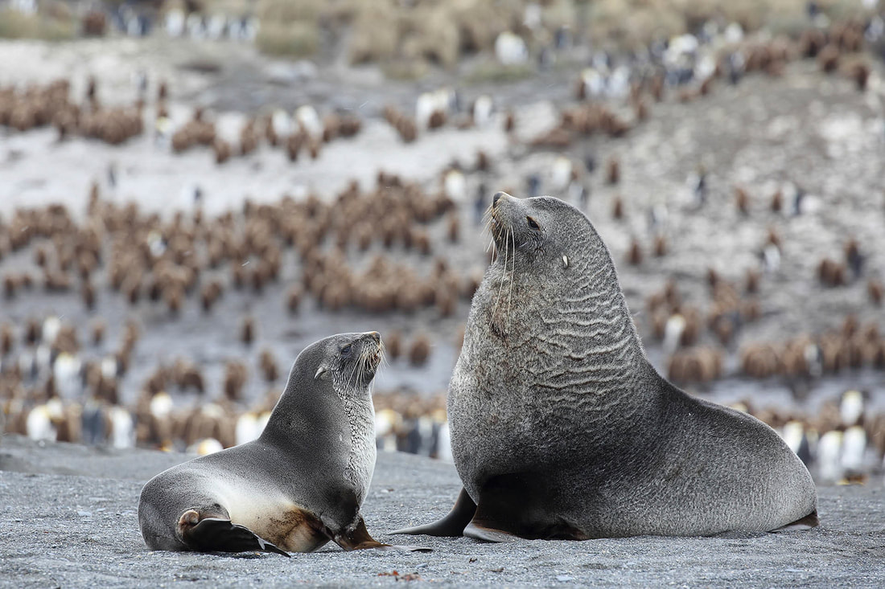
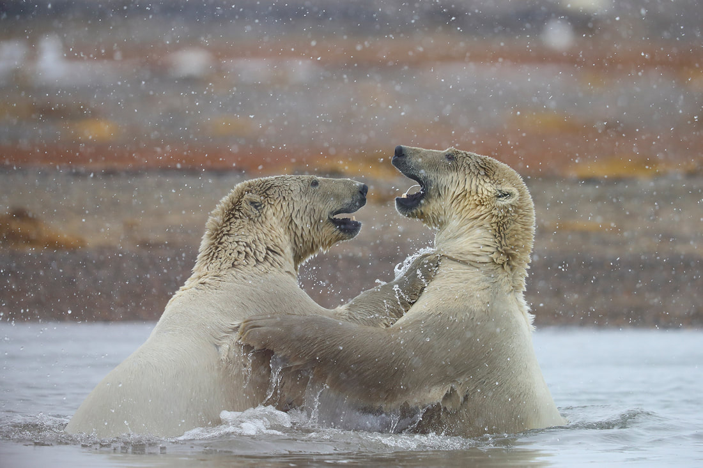

Dieren, landschappen en meer vastgelegd op plekken waar de natuur het hoogste woord heeft. Bekijk het portfolio en ontdek de foto's.

Meer dan 50 foto's te ontdekken. Klik door naar een categorie of blader door alle foto's.

Een woordje uitleg over wie we zijn en wat we doen.
Heeft u nog vragen? Aarzel dan niet om contact met ons op te nemen.